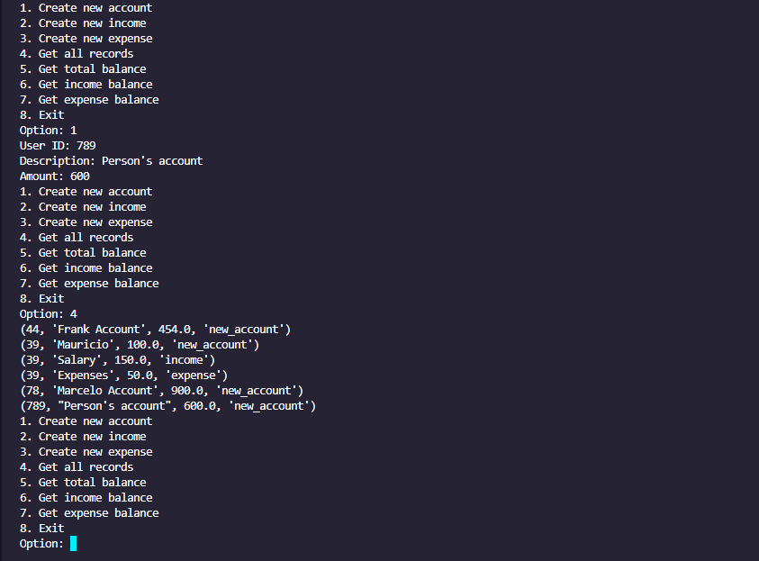

Proyectos
Administrador de edificios
Utilizamos automatización de procesos para registrar distintos reportes, ingresos, moras, etc. Además tener toda la información del edificio en las bases de datos.
Ver ProyectoGenerador de certificados
A través de un algoritmo, logramos crear certificados automáticos simplemente solicitando el nombre del estudiante y el curso que culminó.
Ver Proyecto

App de flujo de efectivo
Te permite tener un registro de todos tus egresos e ingresos, además de poder solicitar reportes del día que se efectuaron, un balance mensual, etc.
Ver Proyecto